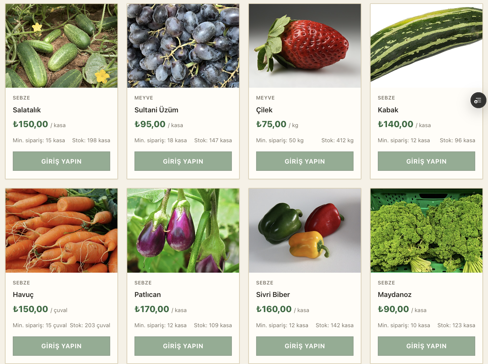
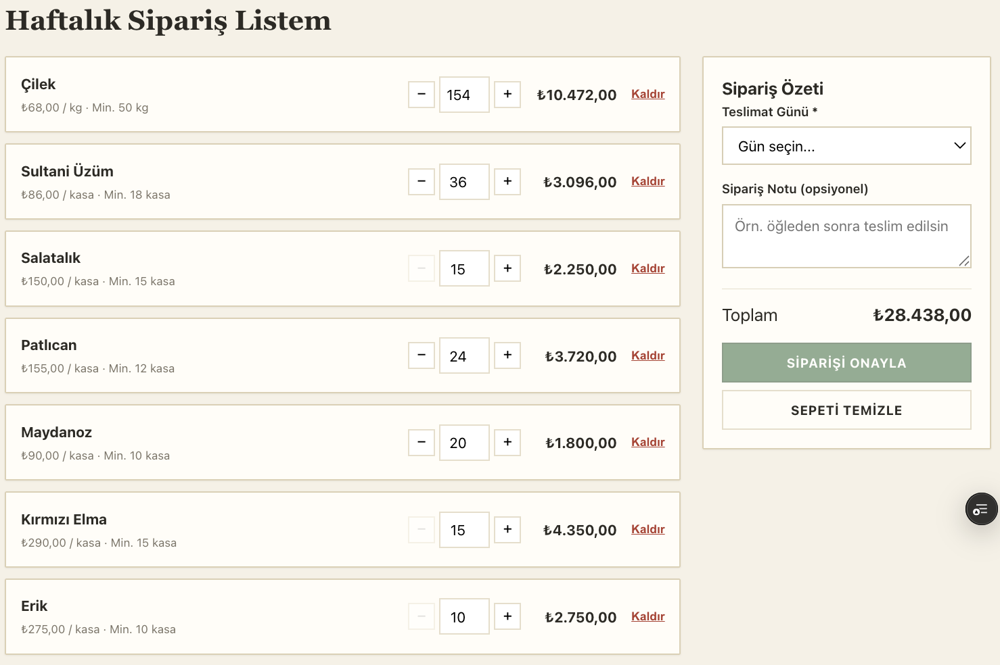
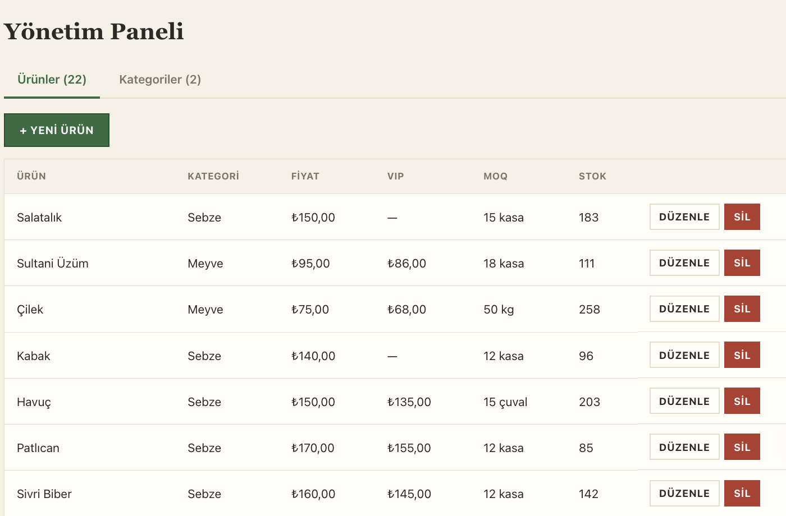

MERN Stack Full-Stack Web Uygulaması — Dönem Projesi
Numan Gıda, perakendecilerin bir toptancıdan taze meyve ve sebze siparişi verebildiği B2B bir web uygulamasıdır. Sistem; minimum sipariş miktarı kuralı, VIP bayilere özel fiyatlandırma, teslimat günü seçimi ve otomatik fatura üretimi gibi gerçek bir toptan satış senaryosunun ihtiyaçlarını karşılar.
Uygulama MERN Stack mimarisi olan MongoDB, Express.js, React.js ve Node.js teknolojileriyle geliştirilmiştir. Hem sunucu hem istemci tarafında çalışan, veritabanı destekli ve JWT tabanlı kimlik doğrulama içeren tam yığın bir yapıya sahiptir.
| Bileşen | Adres |
|---|---|
| Web Sitesi | https://stokmarket.vercel.app |
| API | https://numangida-api.onrender.com |
| Kaynak Kod | github.com/NumanBaran6/stokmarket |
Tüm hesapların şifresi: 123456
| Rol | E-posta | Yetki |
|---|---|---|
| Yönetici | admin@numangida.com | Ürün ve kategori yönetimi, tüm siparişler |
| VIP Bayi | vip@numangida.com | İndirimli VIP fiyatlarıyla sipariş |
| Standart Bayi | bayi@numangida.com | Normal fiyatlarla sipariş |
| Katman | Teknolojiler |
|---|---|
| Frontend | React 18, React Router 6, Vite, Axios, Context API, özgün responsive CSS |
| Backend | Node.js, Express.js 4, MVC mimarisi |
| Veritabanı | MongoDB Atlas, Mongoose 8 |
| Kimlik Doğrulama | JWT, bcryptjs ile şifre hashleme |
| Yardımcı | CORS, morgan, dotenv, multer |
| Dağıtım | Vercel, Render, MongoDB Atlas |
| Versiyon Kontrol | Git ve GitHub |
Proje üç katmanlı bir mimariye sahiptir: İstemci tarafında React, sunucu tarafında Express API ve veri katmanında MongoDB. Backend tarafında MVC benzeri bir yapı kullanılmıştır; rotalar, iş mantığı ve veri modelleri ayrı katmanlara bölünmüştür.
. ├── server/ # Backend - Node + Express │ └── src/ │ ├── config/ # Veritabanı bağlantısı │ ├── controllers/ # İş mantığı │ ├── middleware/ # Kimlik, hata yönetimi, dosya yükleme │ ├── models/ # Mongoose şemaları │ ├── routes/ # API router'ları │ ├── utils/ # JWT üretimi, seed │ ├── app.js # Express uygulaması │ └── index.js # Sunucu giriş noktası │ ├── client/ # Frontend - React + Vite │ └── src/ │ ├── api/ # axios örneği │ ├── components/ # Yeniden kullanılabilir bileşenler │ ├── context/ # AuthContext, CartContext, ToastContext │ ├── pages/ # Sayfalar │ ├── styles/ # Özgün responsive CSS │ └── utils/ # Biçimlendirme yardımcıları │ ├── docs/ # UML diyagramları └── README.md
RESTful API tasarımı uygulanmış; tüm HTTP metotları olan GET, POST, PUT ve DELETE
kullanılmıştır. Modüler router yapısı, merkezi hata yönetimi, istek loglama, CORS ve
.env ile yapılandırma yönetimi mevcuttur.
| Metot | Yol | Erişim | Açıklama |
|---|---|---|---|
| POST | /api/auth/register | Herkese açık | Bayi kaydı |
| POST | /api/auth/login | Herkese açık | Giriş, JWT döner |
| GET | /api/auth/me | Korumalı | Profil bilgisi |
| GET | /api/products | Herkese açık | Ürün listeleme, arama ve filtre |
| GET | /api/products/:id | Herkese açık | Ürün detayı |
| POST | /api/products | Yönetici | Ürün ekleme |
| PUT | /api/products/:id | Yönetici | Ürün güncelleme |
| DELETE | /api/products/:id | Yönetici | Ürün silme |
| GET / POST / PUT / DELETE | /api/categories | Liste herkese, yazma Yönetici | Kategori CRUD |
| GET | /api/orders | Korumalı | Siparişleri listeleme |
| POST | /api/orders | Bayi | Sipariş oluşturma, MOQ ve stok kontrolü |
| PUT | /api/orders/:id/status | Yönetici | Sipariş durumu güncelleme |
| DELETE | /api/orders/:id | Korumalı | Sipariş iptal etme |
| POST | /api/upload | Yönetici | Ürün görseli yükleme |
Mongoose ile 4 farklı model tanımlanmıştır: User, Category, Product ve Order.
Modeller arası ilişkiler ref ve populate ile kurulmuş, veri
doğrulama kuralları şemalarda uygulanmıştır. Tüm CRUD işlemleri eksiksizdir.
Bileşen tabanlı mimari ile 11'den fazla yeniden kullanılabilir bileşen ve React Router
ile 9 farklı sayfa geliştirilmiştir. State yönetimi useState,
useEffect ve useContext ile yapılır; üç ayrı context olan
Auth, Cart ve Toast uygulamayı yönetir. Tüm tasarım mobil, tablet ve masaüstü uyumludur.
| Bileşenler | Sayfalar |
|---|---|
| Navbar, Footer, ProtectedRoute | Katalog |
| ProductCard, Modal, Spinner | Ürün Detay |
| Toast, StatusBadge, EmptyState | Giriş ve Kayıt |
| FormField, ReminderBanner, Logo | Sepet |
| Siparişlerim ve Sipariş Detay | |
| Yönetim Paneli |
Uygulama üç ayrı bulut servisi kullanılarak canlıya alınmıştır.
| Katman | Servis | Adres |
|---|---|---|
| Frontend | Vercel | stokmarket.vercel.app |
| Backend API | Render | numangida-api.onrender.com |
| Veritabanı | MongoDB Atlas | Bulut cluster |
Frontend'in API adresi VITE_API_URL, backend'in veritabanı bağlantısı
MONGODB_URI ve JWT_SECRET ortam değişkenleri ile yapılandırılır.
Her kod gönderiminden sonra Vercel ve Render otomatik olarak yeniden dağıtım yapar.
.gitignore ile node_modules ve .env dışlanmıştır.README.md dosyası mevcuttur.# Backend cd server npm install npm run dev # http://localhost:5001 # Frontend cd client npm install npm run dev # http://localhost:5173
Meyve ve sebze ürünleri; fiyat, minimum sipariş miktarı ve stok bilgisiyle.

Miktar ayarlama, teslimat günü seçimi ve sipariş özeti.

Ürün listesi; fiyat, VIP fiyat, minimum sipariş ve stok bilgileriyle.

Numan Gıda projesi, MERN Stack ile geliştirilmiş; backend, frontend, veritabanı ve kimlik doğrulama bileşenlerinin tamamını içeren, gerçek bir B2B toptan satış senaryosunu karşılayan tam yığın bir web uygulamasıdır. Proje canlı ortamda yayında olup, kaynak kodu GitHub üzerinde anlamlı commit geçmişiyle birlikte erişilebilir durumdadır.
Numan Baran — 231201048 — Rumeli Üniversitesi — BLG330 Web Programlama — Haziran 2026